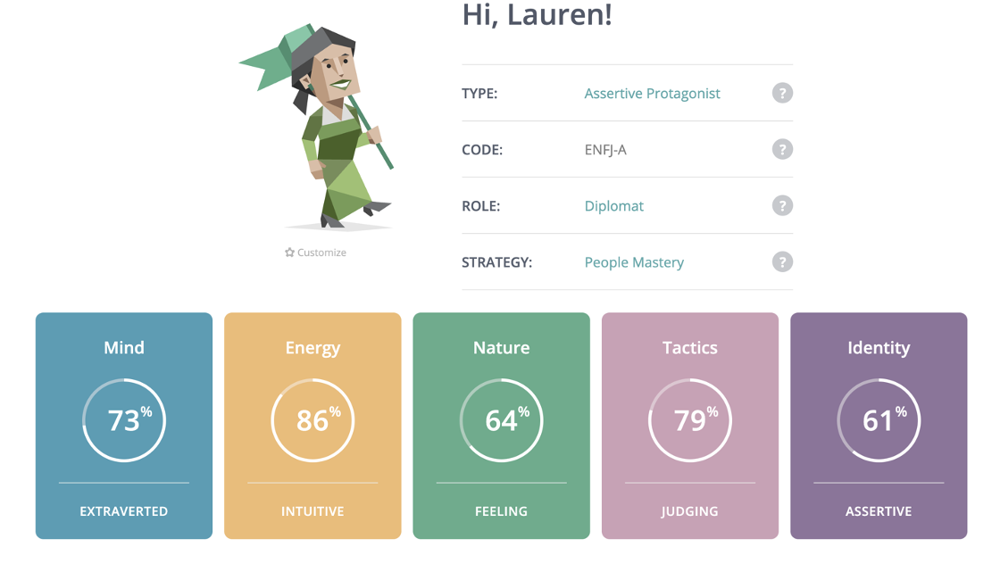

I was identified as having the personality type of ENFJ-A, a tactile learning style and being a democratic leader.
The results on my Myers-Briggs test and leadership style test supported my self-reflection and didn’t come as a surprise to me. It means that I am sure of myself and my behaviour and can be confident in how I am going to react when in different circumstances. I was shocked by the learning style result, as I had always thought that I was more an auditory learner. In future I will ensure that I am able to move my body more while studying and stop for short regular breaks.
I don’t believe that the results will influence my behaviour in teams, instead my behaviour in the teams is reflected in the test results. I have always worked in teams, and I am very comfortable in filling any role that is needed for the success of the team. Quite frequently this means filling a leading or managerial role due to my ability to organise deadlines and liaise between people with differing views quite often resulting in a successful team dynamic.
When working as part of a team I always reflect on what is best for the team and how I can best utilise my skills. In some circumstances this means being simply a team member and at other times it means taking upon a leadership role. Every team I have been in has been different and being able to adapt to new team dynamics is essential.
Myers-Briggs Personality Test
Figure 1: Lauren's Myers-Briggs Personality Results
Education Planner Learning Style Test

Figure 2: Lauren's Learning Style Test Results
MindTools Leadership Style Test
Figure 3: Lauren's Leadership Style Test Results